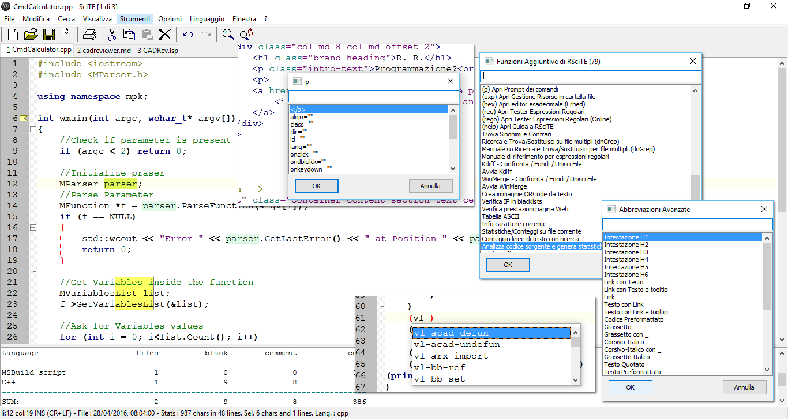

Autore : Roberto Rossi
Versione 74
Un Editor di testo potente, semplice, veloce...
Un insieme di strumenti per creare un facile ed efficace sistema di sviluppo...
Nel panorama attuale, esistono moltissimi software per l’editazione dei file di testo. In questo caso però, non ci si riferisce a editor come Writer(LibreOffice) o Word, ma a programmi indirizzati alla stesura di file di testo privi di formattazione, solitamente utilizzati da programmatori o da chiunque voglia scrivere senza la necessità di impaginare e presentare quanto fatto.
SciTE è un potente editor, studiato per il programmatore, ma che può essere utilizzato da chiunque, indipendentemente dalla sua professione. Creare e modificare un testo con SciTE è semplice e produttivo... Semplice come il "Blocco Note", completo e potente come gli editor professionali.
SciTE è nato come esempio di utilizzo del componente Scintilla (http://www.scintilla.org), nel corso del tempo si è poi trasformato in un completo e sofisticato editor di testo. Tutto ciò rispettando sempre la filosofia dell’Open Source e del Free Software (Software Libero).
Come detto, l’elemento su cui si basa SciTE porta il nome di Scintilla. Quest’ultimo è un componente, a codice libero, per l’editazione del testo, distribuito completo di codice sorgente e di una licenza che ne permette l’utilizzo in qualsiasi progetto, sia commerciale che gratuito.
Scintilla e SciTE sono attualmente disponibili per gli ambienti Windows, Linux e osx. E’ possibile utilizzarlo con Windows 2000, Windows XP, Windows 2003, Vista, 7, 8, 10 o successivi, Ubuntu, Linux Red Hat 8, 9 o successivi, Fedora, Mandrake, Mandriva, ed in genere con tutte le piattaforme Linux che supportino l’interfaccia GTK+ (praticamente tutte).
L’autore originale di SciTE è Neil Hodgson, coadiuvato da moltissimi altri programmatori, segno del successo che questo software riscuote.
Ecco un’immagine di SciTE in azione :

Nonostante SciTE faccia un "mestiere" comune a molti altri software (l’editor di testo), la sua impostazione e le sue caratteristiche lo differenziano radicalmente da qualsiasi altro.
Ad un primo approccio, SciTE appare semplice e "scarno", con un’interfaccia essenziale, nella quale trovano posto un menu, poche icone e un’ampia area di lavoro.
Dai menu è possibile accedere a gran parte delle funzionalità del programma, molte delle quali accessibili anche attraverso semplici combinazioni di tasti.
Una delle peculiarità di SciTE è proprio l’ampio utilizzo delle combinazioni di tasti. Questa caratteristica si pone lo scopo di consentire la modifica del testo senza mai staccare la mani dalla tastiera, migliorando il livello di efficienza e produttività, consentendo così all’operatore di mantenere la concentrazione sul proprio lavoro senza distrarlo con l’utilizzo di mouse, icone, menu ecc...
Tale approccio non penalizza, in alcun modo le funzionalità del software, che rimangono ai massimi livelli, certamente paragonabili con quelle di prodotti ben più blasonati e costosi.
Un’altra caratteristica distintiva di SciTE è la quasi totale assenza di maschere di configurazione. Questa “mancanza”, di fatto contribuisce a ridurre la complessità delle interfacce, riducendo così, anche i tempi di sviluppo del programma. Al tempo stesso consente di aumentare, in modo significativo, il numero di parametri configurabili, che attualmente sono nell’ordine delle centinaia.
Tutte le configurazione dell’editor sono memorizzate all’interno di semplici file di testo, modificabili a piacere dall’utente.
Anche se a prima vista questo sistema può disorientare, grazie alla dettagliata documentazione, accessibile attraverso l’uso dell’apposito menu di aiuto, è possibile intervenire su questi file in modo rapido ed immediato.
A tutto ciò va poi aggiunta la possibilità di utilizzare un vero e proprio linguaggio di programmazione (di nome LUA), per implementare nuove funzioni o estendere quelle già presenti.
Infine, non è da sottovalutare la possibilità di usare l’editor direttamente da un dispositivo rimovibile come, ad esempio, un pendrive USB, senza quindi essere costretti ad effettuare alcuna installazione.
Grazie alle possibilità offerte, SciTE può essere utilizzato sia dal neofita, sia dall’utente esperto o dal programmatore, traendo comunque vantaggi significativi dalla sua potenza e dalla sua essenzialità.
In pratica, SciTE, si candida ad essere il sostituto sia del classico "Blocco Note", sia degli editor professionali utilizzati nello sviluppo delle applicazioni software.
Ecco qui riassunte le caratteristiche principali della versione originale di SciTE, tutte presenti anche in RSciTE.
Utilizzo Documenti * Interfaccia MDI per lavorare con più documenti contemporaneamente.
Sintassi evidenziata:
Come ogni editor che si rispetti, anche SciTE dispone di una vasta schiera di combinazioni di tasti per accedere alla funzionalità più utilizzate. Molte delle combinazioni disponibili sono comuni agli ambienti Windows e Linux. Inoltre, tutte le combinazioni di tasti sono ridefinibili attraverso l’editazione di appositi file di configurazione. Per conoscere i tasti veloci disponibili è possibile consultare le tendine dei menu presenti nel programma, oppure leggere questa tabella riassuntiva :
|| Apri il file selezionato || Ctrl+Maiusc+O |- || Ricarica documento corrente || Ctrl+R |- || Chiudi documento corrente || Ctrl+W (oppure Ctrl+F4) |- || Salva || Ctrl+S |- || Salva con nome... || Ctrl+Maiusc+S |- || Salva una copia del documento corrente || Ctr+Maiusc+P |- || Stamp || Ctrl+P |- || Annulla || Ctrl+Z |- || Ripristina || Ctrl+Y |- || Taglia Selezione || Ctrl+X |- || Copia Selezione || Ctrl+C |- || Incolla Selezione || Ctrl+V |- || Cancella || Canc |- || Seleziona tutto || Ctrl+A |- || Cerca parentesi graffa corrispendente || Ctrl+E |- || Seleziona fino alla parentesi graffa || Ctrl+Maiusc+Spazio |- || Completa Simbolo || Ctrl+I |- || Completa Parola corrente || Ctrl+Invio |- || Espandi Abbreviazione || Ctrl+B |- || || |- || Inserisci Abbreviazione || Ctrl+Maiusc+R |- || Aggiungi o elimina il commento ad un blocco di testo || Ctrl+Q |- || Inscatola Commento || Ctrl+Maiusc+B |- || Versa Commento || Ctrl+Maiusc+Q |- || Rendi la selezione MAIUSCOLA || Ctrl+Maiusc+U |- || Rendi la selezione minuscola || Ctrl+U |- || Trova... || Ctrl+F |- || Trova Successivo || F3 |- || Trova Precedente || Maiusc+F3 |- || Cerca nei file... || Ctrl+Maiusc+F |- || Trova e Sostituisci || Ctrl+H |- || Ricerca Incrementale || Ctrl+Alt+I |- || Vai a... || Ctrl+G |- || Vai al segnalibro successivo || F2 |- || Vai al segnalibro precedente || Maiusc+F2 |- || Attiva/Disattiva segnalibro || Ctrl+F2 |- || Visualizzazione a Schermo Intero || F11 |- || Visualizza/Nascondi Spazi e Tabulazioni || Ctrl+Maiusc+8 |- || Visualizza/Nascondi caratteri di Fine Linea || Ctrl+Maiusc+9 |- || Visualizza/Nascondi finestra di Output || F8 |- || || |- || Parametri || Maiusc+F8 |- || Compila || Ctrl+F7 |- || Genera || F7 |- || Esegui || F5 |- || Messaggio successivo || F4 |- || Messaggio precedente || Maiusc+F4 |- || Cancella contenuto finestra di Output || Maiusc+F5 |- || Cambia pannello attivo || Ctrl+F6 |- || Configurazione Indentazione... || Ctrl+Maiusc+I |- || Usa caratteri a spaziatura fissa || Ctrl+F11 |- || Documento Precedente || Maiusc+F6 |- || Documento Successivo || F6 |- || Aiuto/Manuale(dipendente dal tipo di file aperto) || F1 |- || Ingrandisci dimensione testo || Ctrl+Keypad+ |- || Riduci dimensione testo || Ctrl+Keypad- |- || Ripristina dimensione originale testo || Ctrl+Keypad/ |- || Cambio documento attivo || Ctrl+Tab |- || Indentazione blocco di testo || Tab |- || Elimina indentazione blocco || Maiusc+Tab |- || Eliminazione da inizio parola || Ctrl+BackSpace |- || || |- || Eliminazione fino a fine parola || Ctrl+Delete |- || Eliminazione testo da inizio linea a posizione cursore || Ctrl+Maiusc+BackSpace |- || Eliminazione testo da posizione corrente a fine linea || Ctrl+Maiusc+Delete |- || Vai a inizio documento || Ctrl+Home |- || Estendi selezione fino a inizio documento || Ctrl+Maiusc+Home |- || Vai a inizio linea || Alt+Home |- || Estendi selezione fino a inizio linea || Alt+Maiusc+Home |- || Vai alla fine del documento || Ctrl+End |- || Estendi selezione fino alla fine del documento || Ctrl+Maiusc+End |- || Vai alla fine della linea corrente || Alt+End |- || Estendi selezione fino a fine riga corrente || Alt+Maiusc+End |- || Espandi o contrai punto di ’fold’ || Ctrl+Keypad* |- || Crea o elimina segnalibro (bookmark) || Ctrl+F2 |- || Vai al prossimo segnalibro || F2 |- || Seleziona fino al prossimo segnalibro || Alt+F2 |- || Cerca testo selezionato nel documento corrente || Ctrl+F3 |- || Cerca testo selezionato nel documento corrente (a ritroso) || Ctrl+Maiusc+F3 |- || Scorri documento verso l’alto || Ctrl+Freccia Su |- || Scorri documento verso l’alto || Ctrl+Freccia Giu |- || Taglia linea corrente || Ctrl+L |- || || |- || Copia linea corrente || Ctrl+Maiusc+T |- || Elimina linea corrente || Ctrl+Maiusc+L |- || Scambia linea corrente con precedente || Ctrl+T |- || Duplica linea corrente || Ctrl+D |- || Cerca corrispondenza su condizione preprocessore || Ctrl+K |- || Seleziona corrispondenza su condizione preprocessore || Ctrl+Maiusc+K |- || Cerca corrispondenza su condizione preprocessore (a ritroso) || Ctrl+J |- || Seleziona corrispondenza su condizione preprocessore (a ritroso) || Ctrl+Maiusc+J |- || Vai al paragrafo precedente || Ctrl+’ |- || Estendi selezione fino al paragrafo precedente || Ctrl+Maiusc+’ |- || Vai al paragrafo successivo || Ctrl+ì |- || Estendi selezione fino al paragrafo successivo || Ctrl+Maiusc+ì |- || Vai a parola precedente || Ctrl+Freccia Sinistra |- || Espandi selezione fino a parola precedente || Ctrl+Maiusc+Freccia Sinistra |- || Vai a parola successiva || Ctrl+Freccia Destra |- || Espandi selezione fino a parola successiva || Ctrl+Maiusc+Freccia Destra |- || Vai alla parte precedente della parola corrente || Ctrl+ù |- || Espandi la selezione fino alla parte precedente della parola corrente || Ctrl++Maiusc+ù |- || Vai alla parte successiva della parola corrente || Ctrl+ |- || Espandi selezione fino alla parte successiva della parola corrente || Ctrl+Maiusc+ |- || || |- || Ingrandimento/Riduzione dimensione caratteri (disponibile solo in ’RSciTE’) || Ctrl+[tastierino numerico +/-] |- || Ricerca contestuale online (disponibile solo in ’RSciTE’) || Ctrl+F1 |- || Lista ultimi file utilizzati (disponibile solo in ’RSciTE’) || Ctrl+Alt+O |- || Funzionalità avanzate(disponibile solo in ’RSciTE’) || F12 |- || Inserimento abbreviazione/modello (disponibile solo in ’RSciTE’) || Ctrl+< |- || Copia testo in Appunti Multipli (disponibile solo in ’RSciTE’) || Ctrl+Alt+C |- || Taglia testo ed inseriscilo in Appunti Multipli (disponibile solo in ’RSciTE’) || Ctrl+Alt+X |- || Incolla testo da Appunti Multipli (disponibile solo in ’RSciTE’) || Ctrl+Alt+V |- || Crea nuovo file con il contenuto del pannello di output (disponibile solo in ’RSciTE’) || Ctrl+Alt+N |- || Permette di visualizzare le informazioni sulla versione di RsciTE che si sta utilizzando, inoltre consente di accedere alla procedura di aggiornamento. (disponibile solo in ’RSciTE’) || Shift+F1 |- |}
= [[Image:]]Il Linguaggio di programmazione LUA =
Un potente linguaggio di scripting, integrato in SciTE!
Da tempo, SciTE, include un vero e proprio linguaggio di programmazione che consente di potenziare l’editor in modo flessibile ed immediato.
LUA è un linguaggio di scripting di utilizzo generico, snello, potente e flessibile. Offre un buon supporto per la programmazione object-oriented, per la programmazione funzionale e per quella orientata ai dati.
LUA è disponibile sia come linguaggio interpretato a se stante, sia come libreria ed è scritto utilizzando il linguaggio C, cosa che lo rende adatto all’utilizzo su molti sistemi operativi.
LUA è inoltre caratterizzato da una sintassi semplice ed immediata che, per alcuni aspetti, ricorda quella del linguaggio basic. A differenza di quest’ultimo LUA è estremamente rapido ed efficiente nel’esecuzione degli script.
Proprio grazie a queste caratteristiche, gli autori di SciTE, hanno deciso di integrarlo nel loro editor, dando agli utenti la possibilità di estendere e di potenziare il programma.
Per chiarire meglio le potenzialità di LUA all’interno di SciTE, ecco un esempio tratto dalla distribuzione RSciTE che effettua l’ordinamento del file corrente :
local function insertLinea( idx, linea ) editor:AddText(linea) end
local function OrderCurrentBuffer() local linea,pos local i=0 linea = editor:GetLine(i) while linea do tbLinee[i] = linea i = i + 1 linea = editor:GetLine(i) end table.sort(tbLinee) editor:ClearAll() table.foreach(tbLinee, insertLinea) end
OrderCurrentBuffer() print("Ordinamento File Concluso con successo.") end
Per approfondire le proprie conoscenze su LUA e sul suo utilizzo, si consulti la sezione Siti Utili.
= SciTE al Lavoro =
RSciTE editando un file .lsp (LISP)
RSciTE editando un file .php, con l’autocompletamento attivo
RSciTE editando un file .php, con l’aiuto sulla sintassi
= RSciTE =
SciTE viene distribuito sia in formato sorgente sia in forma compilata, per Windows e per Linux. Purtroppo, chi si accosta per la prima volta a SciTE può rimanere deluso in quanto, l’editor non prevede un’installatore, nè in lingua inglese, nè in italiano, non viene prevista alcuna forma di integrazione con il sistema, infine, le impostazioni di default risultano, alle volte, insufficienti per gli utilizzi avanzati. Insomma, il primo approccio non è dei migliori.
Per sopperire a queste piccole carenze, l’utente può personalizzare l’editor manualmente, oppure può affidarsi a una delle distribuzioni alternative di SciTE.
'''RSciTE''' è una di queste distribuzioni alternative. '''La sua caratteristica principale è quella di essere indirizzata all’utente italiano che opera in ambiente Windows'''. Realizzata da '''Roberto Rossi''' ([http://www.redchar.net/ http://www.redchar.net]) si pone come obbiettivo quello di promuovere SciTE come editor di testo per tutti gli usi.
Alle volte modificando semplicemente le configurazione, in altri casi, sfruttando il suo linguaggio di programmazione interno ('''LUA'''), '''RSciTE''' include una serie di Funzionalità aggiuntive per aumentare (dove necessario) la produttività dell’editor.
Inoltre, nella distribuzione '''RSciTE''' sono inseriti altri software che, uniti all’editor di testo, permettono di ottenere un formidabile strumento di editazione.
= Funzionalità Aggiuntive in RSciTE =
Questo elenco mostra le funzionalità presenti e sviluppate esclusivamente per '''RsciTE :'''
{| style="border-spacing:0;margin:auto;width:15.921cm;" |- style="border:none;padding:0.097cm;" || '''Funzionalità Aggiuntiva ''' || '''Esempio ''' |- style="border:none;padding:0.097cm;" || '''F12''', gruppo di funzioni generiche per l’editazione del testo, raggiungibili mediante il tasto '''F12'''. Per maggiori dettagli si consulti la sezione '''F12'''. || [[Image:|top]] |- style="border:none;padding:0.097cm;" || Sistema per inserimento abbreviazioni avanzate, tramite la combinazione di tasti '''Ctrl+<'''. || [[Image:|top]] |- style="border:none;padding:0cm;" || '''Inserimento assistito proprietà dei TAG HTML'''. Attraverso l’utilizzo della combinazione di tasti '''Ctrl+-''', all’interno dei file HTML/XML ecc..., si accede ad una tendina di suggerimento che permette la scelta dell’attributo da inserire. || [[Image:|top]] |- style="border:none;padding:0cm;" || Integrato '''HTML TIDY''' per la formattazione automatica dei file HTML/XML. Per maggiori dettagli si consulti la sezione '''HTML Tidy.''' || [[Image:|top]] |- style="border:none;padding:0cm;" || Aggiunto '''riconoscimento e colorazione sintassi''' per il linguaggio '''LISP''' utilizzato in questi software : || [[Image:|top]] |- style="border:none;padding:0cm;" || Integrato sistema di '''suggerimenti''' per il linguaggio '''LISP''' utilizzato in questi software : || [[Image:|top]] |- style="border:none;padding:0cm;" || Aggiunta '''sintassi''' per il linguaggio '''DCL''' utilizzato in molti CAD, ad esempio in AutoCAD, progeCAD e in tutti i CAD compatibili. || [[Image:|top]] |- style="border:none;padding:0cm;" || Integrato il sistema di '''suggerimenti''' per il linguaggio '''DCL'''. || [[Image:|top]] |- style="border:none;padding:0cm;" || Integrato '''completamento automatico per HTML''' || [[Image:|top]] |- style="border:none;padding:0cm;" || Integrato sistema di '''suggerimenti per PHP''' || [[Image:|top]] |- style="border:none;padding:0cm;" || || |- style="border:none;padding:0cm;" || Integrato '''completamento automatico per PHP''' || [[Image:|top]] |- style="border:none;padding:0cm;" || '''Riconoscimento file di PHP-GTK''' || |- style="border:none;padding:0cm;" || '''Personalizzazione e aggiornamento''' file di supporto per il riconoscimento del linguaggio '''Visual Basic.NET/VB/VBA/VBS''' || [[Image:|top]] |- style="border:none;padding:0cm;" || Supporto '''completamento automatico per Visual Basic.NET/VB/VBA/VBS''' || [[Image:|top]] |- style="border:none;padding:0cm;" || Supporto sistema di '''suggerimenti per Visual Basic.NET/VB/VBA/VBS''' || [[Image:|top]] |- style="border:none;padding:0cm;" || '''Tabella ASCII'''. Nei momenti di necessità è possibile consultare una comoda tabella con i 255 caratteri standard. || [[Image:|top]] |- style="border:none;padding:0cm;" || Supporto abbreviazioni per i seguenti linguaggi : || [[Image:|top]] |- style="border:none;padding:0cm;" || Supporto sistema di '''suggerimenti per linguaggio LUA''' || [[Image:|top]] |- style="border:none;padding:0cm;" || Integrato '''manuale per linguaggio LUA''' || [[Image:|top]] |- style="border:none;padding:0cm;" || '''Editor Esadecimale FRhed''' (versione per Windows). Accessibile da '''F12''', permette l’editazione del file corrente in formato Esadecimale. || [[Image:|top]] |- style="border:none;padding:0cm;" || '''Software per il confronto e per l’unione di file, KDiff'''. Accessibile da '''F12''', permette il confronto di file e cartelle. || [[Image:|top]] |- style="border:none;padding:0cm;" || Software per il confronto e per l’unione di file, '''WinMerge'''. Accessibile da '''F12''', permette il confronto di file e cartelle. || [[Image:|top]] |- style="border:none;padding:0cm;" || Integrazione con il '''menu contestuale di Windows'''. || [[Image:|top]] |- style="border:none;padding:0cm;" || '''Procedura di installazione''', in lingua italiana, per i sistemi Windows (XP / Vista / 7 / 8 / 10 o successivi), con possibilità di personalizzazione delle funzionalità da attivare. || [[Image:|top]] |- style="border:none;padding:0cm;" || '''File LISP : Esegui in CAD. '''Nei file LSP (Lisp) è possibile utilizzare il tasto F5 per caricare il file corrente nel CAD aperto al momento. || |- style="border:none;padding:0cm;" || '''Interprete Diretto Espressioni Lua.''' In questo modo sarà possibile testare direttamente una linea di codice Lua senza dover creare un apposito script.
|| |- style="border:none;padding:0cm;" || '''Convertitore Testo→Abbreviazione/Template.''' Aiuta a creare le macro da inserire con SciTE.
|| |- style="border:none;padding:0cm;" || '''Elenco TODO. '''Consente di elencare tutte le linee che rappresentano gli elementi da completare nel file di testo corrente
|| |- style="border:none;padding:0cm;" || '''Gestore Finestre Multiple.''' || |- style="border:none;padding:0cm;" || '''Apertura Gestione Risorse. '''Nel caso si renda necessario, direttamente da SciTE è possibile aprire il gestione risorse o il risorse del comuper di Windows posizionato sulla cartella del file corrente.
|| |- style="border:none;padding:0cm;" || '''Gestore Trasparenza finestra di SciTE. '''E’ possibile modificare il livello di trasparenza della finestra dell’editor in modo da poterlo utilizzare in ogni situazione.
|| |- style="border:none;padding:0cm;" || '''Gestore Appunti Multipli. '''Grazie alla gestione di più appunti sarà possibile salvare e riutilizzare semplicemente i nostri spezzoni di testo più utili.
|| |- style="border:none;padding:0cm;" || '''Gestore Avanzato Segnalibri/Bookmarks. ''' || |- style="border:none;padding:0cm;" || '''Ricerca Contestuale Online (CTRL+F1)''' || |- style="border:none;padding:0cm;" || '''Trova/Sostituisci su file multipli.''' Una potente funzione di ricerca e sostituzione che si affianca alla gia validà procedura interna di SciTE.
|| |- style="border:none;padding:0cm;" || '''Inserimento BOM per file con codifica Unicode'''. Alle volte capita di scontrarsi con file non correttamente formattati, magari unicode ai quali manca una intestazione valida. Questa funzione risolve il problema.
|| |- style="border:none;padding:0cm;" || '''Conversione valori decimali-esadecimali-binari.''' Un piccolo convertitore interno che permette la trasposizione di due semplici numeri. || |- style="border:none;padding:0cm;" || '''Non siamo mica qui... '''Una funzione simpatica, ma con nessuna utilità pratica. || |- style="border:none;padding:0cm;" || '''Disegna/Calcola espressione matematica. '''Tramite questa funzione, data un’espressione matematica completa, sarà possibile rappresentarla graficamente utilizzando alcuni servizi online. || |- style="border:none;padding:0cm;" || Oltre a quanto riportato in questo elenco, sono presenti molte modifiche, secondarie, alle impostazioni di base (es.: margini, numeri linea ecc..). || |- |}
= == F12 == =
== Funzionalità Avanzate per la modifica dei file di testo... ==
Alle volte, durante il lavoro quotidiano, si sente la mancanza di alcune funzionalità previste da altri editor e che SciTE ancora non supporta.
Per sopperire a tale mancanza, sfruttando il potente linguaggio interno a SciTE (LUA), RSciTE prova ad includere ciò che manca.
== E’ nato F12! ==
'''F12''' prende il suo nome dal tasto che lo richiama, e più che di una singola funzione, '''F12''' può essere visto come insieme di utilità per la manipolazione del testo. Alla pressione dell’omonimo tasto ('''F12'''), apparirà l’apposita dialog per la scelta del comando da eseguire:
Attenzione : solo una piccola parte dei comandi disponibili è presente in questa schermata!
Data la mole di funzioni presenti in '''F12''' la maschera di selezione è dotata di una comoda casella nella quale l’utente può inserire un testo, che servirà ad RSciTE per mostrare solo le funzioni che lo riportano. Ad esempio, se volessimo vedere tutte le funzioni riguardanti i l’eliminazione di testo ci basterebbe inserire la parola “elimina”, in questo modo :
== Cosa contiene F12 ==
In aggiunta a queste funzionalità, '''F12''' consente all’utente la realizzazione dei propri script e la loro integrazione direttamente all’interno del pannello principale, senza alcuno sforzo, attraverso l’utilizzo dell’apposita funzione posta al termine dell’elenco di '''F12'''.
= Ricerca Contestuale alternativa in RSciTE =
'''RSciTE''' incorpora una particolare funzione che gli consente di cercare un testo su vari siti web in base alla selezione fatta nell’editor.
In questo modo potremo utilizzare tutti quei servizi web informativi, utili per il Nostro lavoro. Il software aprirà automaticamente il browser web, effettuando la ricerca direttamente sul sito desiderato.
Questa funzione riesce, molte volte, ad essere più utile e flessibile del normale aiuto contestuale eseguito attraverso i normali canali off-line (es.: documentazione .chm).
Prima di osservare alcuni esempi, bisogna sapere che la funzionalità di ricerca contestuale può essere richiamata attraverso la combinazione di tasti '''CTRL+F1''', oppure dal menu Strumenti alla voce '''Ricerca Web'''.
Richiamando la funzione di ricerca web apparirà una semplice maschera nella quale sarà possibile selezionare il sito/servizio sul quale effettuare l’operazione :
Facciamo ora alcuni esempi, iniziando da un file .PHP. Basta selezionare parte del testo, in questo caso la funzione ‘file_exist’, quindi premere CTRL+F1 e selezionare Php :
Una volta premuto su Ok, oppure con un doppio clic sulla voce desiderata, verrà aperto il browser alla pagina voluta :
Proviamo ora con una funzione C standard, ’sprintf”, utilizzando il sito web ‘www.cplusplus.com’ :
Oppure, possiamo provare con una funzione di Windows e il servizio fornito da microsoft (MSDN) :
La funzione di ricerca web opera anche su normali file di testo, ad esempio, proviamo a cercare il termine ‘CTAGS’, utilizzando Google :
= Tools Aggiuntivi presenti in ’RSciTE’ =
Nella distribuzione '''RSciTE''' sono stati introdotti una serie di software aggiuntivi, al fine di potenziare gli strumenti di modifica del testo.
Tali software, sono disponibili, sia in forma indipendente, sia richiamabili direttamente dall’interno di SciTE, questo consente un più rapido utilizzo.
In tutti i casi, tali strumenti seguono le filosofie dell’"Open Source", rimanendo gratuiti, esattamente come l’editor, SciTE.
I programmi inclusi in RSciTE, oltre SciTE, sono : *
== Kdiff, Confrontare e Unire ==
'''KDiff''' è un software Open Source multipiattaforma utile per confrontare e unire file di testo e cartelle. E’ estremamente utile nel caso si vogliano visualizzare le differenze tra diverse versioni dello stesso progetto, inoltre consente l’inserimento delle modifiche di una versione nell’altra.
Le sue funzionalità di base possono essere così riassunte : * Confronta e permette la fusione fra due o tre sorgenti di testo come file o intere cartelle; * Consente la visualizzazione delle differenze in modalità linea o carattere; * Permette la fusione semplificata dei file attraverso l’uso di funzioni automatiche; * Dispone di un facile editore per la l’unione dei file e la risoluzione dei conflitti che possono insorgere; * Consente l’utilizzo delle connessioni di rete attraverso l’uso di KIO; * Consente di evidenziare o nascondere le modifiche apportate da spazi bianchi o commenti; * Supporto per codifica Unicode, UTF-8 e altre...; * Consente la stampa delle differenze; * Supporto per "version control keyword and history"; * Manuale in formato HTML.
== WinMerge, Confrontare e Unire File ==
WinMerge è un software Open Source dedicato al mondo Windows, in grado di confrontare e unire file di testo e cartelle. E’ estremamente utile nel caso si vogliano visualizzare le differenze tra diverse versioni dello stesso progetto, inoltre consente l’inserimento delle modifiche di una versione nell’altra.
Rispetto a KDiff, WinMerge si contraddustingue per un’interfaccia più semplice e per modlità operative più intuitive.
Dal punto di vista delle caratteristiche, WinMerge dispone della maggior parte delle funzione presenti in KDiff con l’aggiunta di alcune esclusività : * Supporto per Microsoft Windows 98/ME/2000/XP/2003/Vista/2008/7. * Supporto per file in formato Windows, Unix e Mac. * Supporto per codifica Unicode, UTF-8 e altre... * Interfaccia a sezioni (Tab). * Modalità visuale per confronto e unione. * Editor flessibile con evidenziazione della sintassi, numeri di linea e ritorno a capo. * Visualizzazione delle differenze in due pannelli verticali con modalità di unione subito attiva. * Riconoscimento linee spostate. * Confronto cartelle con supporto per espressioni regolari. * Confronto cartelle con dimensioni e date. * Supporto per il confronto di sottocartelle. * Supporto per il controllo delle versioni con modalità di risoluzione conflitti e applicazione patch. * Supporto per gli archivi in formato 7-Zip. * Supporto per Plugin aggiuntivi. * Manuale online ed offline in formato HTML.
== FRhed ==
'''FRhed''' è un potente editor esadecimale, adatto alla visualizzazione e alla modifica di file binari e di testo. L’autore di questo software è Marcin Dudek, e nonostante FRhed sia stato scritto nel tempo libero e per hobby, risulta essere uno dei migliori editor esadecimali in circolazione. FRhed è gratuito, ed è licenziato secondo la famosa '''GNU GPL''', ciò ne garantisce l’assoluta libertà di utilizzo e modifica.
'''FRhed''' viene installato con '''RSciTE''' ed è presente sia nel menu dei programma di Windows, sia nel menu ’Strumenti’ interno a SciTE.
Per comprendere meglio la potenza di FRhed, ecco in sintesi, le sue funzionalità salienti : * Applicazione nativa 32 bit Windows con supporto ai file con nomi lunghi e dimensione file editabili limitata solo dalla quantità di memoria presente nel sistema. * Dimensione programma ridotta (circa 100k) con caricamento istantaneo. * Taglia, copia e incolla di valori binari. * Sintassi per descrivere valori di tipo byte, word, longword, float and double binary. * Inserimento diretto di valori esadecimali o di testo. * Possibilità di confrontare due file. * Trova/Sostituisci di qualsiasi combinazione di valori testuali o esadecimali. * Manipolazione diretta dei bit. * Esportazione hexdump. * Impostazione automatica/manuale dei byte visualizzati. * Possibilità di personalizzare la dimensione dei font, il set dei caratteri, i colori e lo sfondo. * Supporto per formati binari Intel e Motorola. * Comando per "Inviare a...". * Supporto per segnalibri personalizzabili. * Supporto per il caricamento parziale dei file. * Drag & Drop. * Possibilità di applicare modelli a informazioni strutturate. * Accesso diretto ai settori dei dischi. * Supporto alla Crittografia. * Sorgenti disponibili e liberamente modificabili secondo la licenza GPL. * Software Libero.
== HTML Tidy, Formattare HTML e XML ==
Quando si editano file HTML o WML è sempre molto facile incorrere in errori, inoltre la formattazione del codice scritto non sempre risulta ottimale e ben allineata.
Proprio per risolvere questo tipo di problemi è nato HTML Tidy. Scritto da ’Dave Raggett’, HTML Tidy è un’utilità gratuita che permette di rilevare un’ampia serie di errori, consentendo la formattazione automatica del codice corretto.
Ogni errore individuato verrà segnalato e corretto, inoltre verranno rilevate anche eventuali incongruenze o segnalati avvertimenti non ritenuti errori veri e propri.
Per comprendere meglio il funzionamento di HTML Tidy, ecco alcuni esempi di come il software interviene sul codice HTML.
'''Rilevamento e correzione TAG mancanti''' :
viene corretto in :
'''Correzione ordinamento TAG''' :
Questo è un paragrafo grassetto
grassetto italico grassetto? normale?
*
viene corretto in :
Questo è un paragrafo grassetto
grassetto italico grassetto? normale?
*
'''Formattazione automatica codice HTML''' :
viene trasformato in :
e molto altro ancora...
HTML Tidy non solo lavora sui file HTML ma, con alcune limitazioni, anche su file XML, ASP, PHP, JSTE.
HTML Tidy è distribuito come programma a linea di comando, è comunque possibile semplificare il suo utilizzo tramite l’uso di una delle interfacce grafiche realizzate da programmatori indipendenti. Per maggiori dettagli si consulti la sezione '''Siti Utili'''.
== Regexerator ==
Questo software risulta quasi indispensabile a tutti quelli che fanno uso delle '''espressioni regolari per la ricerca e la sostituzione del testo'''. Una espressione regolare è un’espressione costruita secondo una sintassi predefinita che permette di descrivere un insieme di stringhe. In questo modo sarà impossibile, all’interno di un testo, individuare ed eventualmente sostituire in modo semplice parti grandi o piccole.
'''Regexerator''' permette, in modo visivo, di verificare l’efficacia di un’espressione regolare applicata ad un determinato testo, mostrandone in modo chiaro la struttura di individuazione. Vediamolo all’opera :
In questo esempio è stata valutata l’espressione “(\d+.\d+.\d+.\d)|(\d+,\d+,\d+,\d+)” per individuare i numeri di versione presenti nel testo esaminato. Come è possibile constatare, l’albero posto sulla destra rappresenta in modo immediati i dati individuati nel testo.
== dnGREP ==
'''dnGREP''' è un software, multi piattaforma, studiato per semplificare la ricerca e la sostituzione del testo.
Questo importante software, disponibile i '''F12''' alla voce '''Trova/Sostituisci su file multipli''' semplifica le operazione di ricerca e sostituzione del testo consentendo di operare in modo automatico su più file.
'''dnGREP''' risulta essere un programma estremamente potente e flessibile, adatto sia al neofita, sia all’esperto programmatore, consentendo un utilizzo esteso delle espressioni regolari.
Nell’immagine riportata sopra, si può osservare '''dnGREP''' durante l’operazione di ricerca del testo '''local function''' all’interno di tutti i file .lua presenti nella cartella di '''RSciTE'''.
= Personalizzare e Configurare RSciTE =
RSciTE è estremamente flessibile, consentendo la modifica di una sterminata serie di parametri, vediamo come configurare e personalizzare l’editor, per renderlo più consono alle nostre abitudini.
In questa sezione sono raccolte diverse procedure per il settaggio dei parametri più comuni di RSciTE, cosi da poter diventare, nel più breve tempo possibile, operativi al 100%.
== Come eseguire applicazioni PHP-GTK ==
In SciTE, durante la modifica di un programma PHP-GTK, è molto utile poter eseguire il file in editazione, attraverso la voce di menu '''Strumenti->Esegui'''.
Per abilitare questa importante funzione è necessario specificare il percorso dell’interprete PHP.EXE. Questa informazione va specificata all’interno del file '''html.properties''', presente nella cartella di SciTE.
Una volta aperto il file, si dovrà modificare la riga contenente : command.go.$(file.patterns.php)= *
Se, ad esempio, avessimo installato PHP-GTK (file php.exe) in c:\php-gtk2, dovremo scrivere : command.go.$(file.patterns.php)=”C:/PHP-Gtk2/php.exe” -f “$(FilePath)” *
A questo punto, durante l’editazione dei nostri programmi, basterà premere F5 per eseguire il file in editazione.
== Aiuto sensibile al contesto, per i file PHP, in RSciTE! ==
'''F1''', il tasto di aiuto più utilizzato dai programmatori.
Durante l’editazione dei file scritti in linguaggio PHP, cosa c’è di meglio che premere il tasto F1 e visualizzare la guida della funzione che si trova in corrispondenza del cursore?
Esattamente come gli editor più blasonati, anche RSciTE (a partire dalla V.2), implementa l’aiuto sensibile al contesto, per utilizzarlo è sufficiente copiare un file!
Prima di tutto procuriamoci il file ufficiale di aiuto per il linguaggio PHP. Avendo l’accortezza di scaricare la versione in formato CHM :
[http://www.php.net/download-docs.php Clicca qui per scaricare il manuale ufficiale di PHP in formato CHM.]
Attenzione : Utilizzando XP SP2 o successivo, dopo aver scaricato il file, occorre cliccare su di esso con il tasto destro del mouse, quindi premere ‘Proprietà‘. Fatto ciò occorre cliccare sul tasto ‘Annulla Blocco’. Questa operazione consente di utilizzarlo correttamente, senza che il sistema dia un antipatico ‘avviso di protezione’.
Una volta scaricato il nostro file (phpmanualen.chm) : * Posizionarsi nella cartella in cui è installato RSciTE (solitamente C:\Programmi\RScite). * Copiare all’interno della cartella di RSciTE il file scaricato (phpmanualen.chm).
Compiute queste operazione, aprite un file PHP, con RSciTE, posizionate il cursore in prossimità del nome di una funzione e premete il tasto '''F1''' :
Ecco comparire l’aiuto relativo!
== Colori di PHP come ‘Dreamweaver’ ==
Ecco come configurare RSciTE in modo che la colorazione del linguaggio PHP sia simile a quella presente nell’editor '''Macromedia Dreamweaver MX'''.
La colorazione per il linguaggio PHP, in '''Macromedia Dreamweaver''' prevede, come valori predefiniti, i seguenti : BRACKET: #000099
COMMENT: #FF9900
CONSTANT: #552200
FUNCTION KEYWORDS: #0000FF
FUNCTIONS: #0000FF
IDENTIFIER: #000000
NUMBER: #FF0000
OPERATOR: #0000FF
RESERVED: #006600
STRING: #CC0000
TYPES: #009999
VARIABLES: #0066FF
TAGS: #000099
*
Per fare in modo che SciTE utilizzi le medesime impostazioni, occorrerà modificare il file '''html.properties''' (presente nella cartella del programma) oppure, più semplicemente, cliccare sul menu '''Opzioni''' e selezionare il comando '''Apri impostazioni del profilo utente'''.
Una volta aperto il file, occorre aggiungere e/o modificare le linee che iniziano come segue : style.hypertext.1 (Tags)
style.hypertext.34 (Testo Predefinito)
style.hypertext.35 (Testo Predefinito)
style.hypertext.118 (Identificatori)
style.hypertext.119 (Stringhe racchiuse tra doppi apici)
style.hypertext.120 (Stringhe racchiuse tra apici singoli)
style.hypertext.121 (Parole chiave)
style.hypertext.122 (Numeri)
style.hypertext.123 (Variabili)
style.hypertext.124 (Commenti)
style.hypertext.125 (Commenti a linea singola)
style.hypertext.126 (Variabili PHP presenti nelle stringhe)
style.hypertext.127 (Operatori)
*
Come si vede, ogni voce imposta una diversa opzione di colorazione, semplicemente reimpostando questi valori e salvando il file si otterrà, in SciTE, una sintassi stile Dreamweaver.
Per rendere più chiara la modifica da effettuare, ecco le linee di configurazione complete, una volta applicati i corretti valori (presi da Dreamweaver): style.hypertext.1=fore:#000099
style.hypertext.34=fore:#FF0000
style.hypertext.35=fore:#FF0000
style.hypertext.118=fore:#000000
style.hypertext.119=fore:#CC0000
style.hypertext.120=fore:#CC0000
style.hypertext.121=fore:#0000FF
style.hypertext.122=fore:#FF0000
style.hypertext.123=fore:#0066FF
style.hypertext.124=fore:#FF9900
style.hypertext.125=fore:#FF9900
style.hypertext.126=fore:#0066FF
style.hypertext.127=fore:#000099
*
== Lavorare con fondo Nero e testo Bianco ==
Una delle modalità che, personalmente, trovo più riposanti per la vista è quella che prevede l’utilizzo di testo chiaro su fondo scuro.
Per ottenere questo effetto occorre modificare le varie configurazioni di colori usate nei vari linguaggi, intervenendo sui settaggi presenti nei vari file .properties.
Per evitare di modificare i file originali, presenti nella cartella di RSciTE, si può cliccare sul menu '''Opzioni''' e selezionare il comando '''Apri impostazioni del profilo utente'''.
Una volta aperto il file, inseriamo quanto segue :
style..33=back:000000,$(font.base)
style..37=fore:#939393
caret.fore=#FFFFFF
selection.alpha=75
selection.back=#FFFFFF
colour.keyword=fore:#649bff
colour.operator=fore:#727272
style.errorlist.32=$(font.small),back:#ffffff
style.lua.13=$(style.lua.5)
style.lua.14=$(style.lua.5)
style.lua.15=$(style.lua.5)
style.lua.16=$(style.lua.5)
style.lua.17=$(style.lua.5)
style.lua.18=$(style.lua.5)
style.lua.19=$(style.lua.5)
Queste impostazioni permettono di utilizzare i normali file di testo e i file scritti in PHP/HTML/XML/Javascript/Lua/InnoSetup con fondo nero e testo chiaro.
= Siti Utili =
'''Siti relativi ai software inclusi in ’RSciTE’ '''
Per poter approfondire la conoscenza delle applicazioni incluse in ’RSciTE’ ecco l’elenco dei collegamenti ai siti più utili.
'''SciTE e Scintilla''' * Scintilla/SciTE Home Page Ufficiale ([http://www.scintilla.org/ http://www.scintilla.org])
'''Roberto Rossi, autore di ’RsciTE’''' * Roberto Rossi, i suoi Progetti ([http://www.redchar.net/ http://www.redchar.net])
'''LUA''' * Linguaggio di programmazione LUA, Home Page Ufficiale ([http://www.lua.org/ http://www.lua.org]). * Portale della comunità di LUA ([http://lua-users.org/ http://lua-users.org/]). * LuaForge ([http://luaforge.net/ http://luaforge.net/]). * Script LUA in SciTE ([http://lua-users.org/wiki/SciteScripts http://lua-users.org/wiki/SciteScripts]).
'''KDiff''' * KDiff Home Page ([http://kdiff3.sourceforge.net/ http://kdiff3.sourceforge.net/]).
'''WinMerge''' * WinMerge Home Page ([http://www.winmerge.org/ http://www.winmerge.org/]).
'''Frhed''' * FRhed Home Page Ufficiale ([http://frhed.sourceforge.net/ http://frhed.sourceforge.net/]).
'''HTML Tidy''' * Home Page Ufficiale di HTML Tidy ([http://tidy.sourceforge.net/ http://tidy.sourceforge.net/]). * Sito di Dave Raggett su HTML Tidy ([http://www.w3.org/People/Raggett/tidy/ http://www.w3.org/People/Raggett/tidy/]). * Tidy UI. GUI per Windows di HTML Tidy ([http://users.rcn.com/creitzel/tidy.html#tidyui http://users.rcn.com/creitzel/tidy.html#tidyui]). * TidyGUI. Interfaccia alternativa, per HTML Tidy ([http://perso.wanadoo.fr/ablavier/TidyGUI/ http://perso.wanadoo.fr/ablavier/TidyGUI/]). * HTML Validator che sfrutta HTML Tidy ([http://www.thedumbterminal.co.uk/services/tidy.shtml http://www.thedumbterminal.co.uk/services/tidy.shtml])
= Nota di Copyright =
Copyright (c) 2005-2016 Roberto Rossi.
Permission is granted to copy, distribute and/or modify this document under the terms of the GNU Free Documentation License, Version 1.2 or any later version published by the Free Software Foundation, with no Invariant Sections, with the Front-Cover Texts being '''RSciTE - Guida alle Caratteristiche''', and with no Back-Cover Texts.